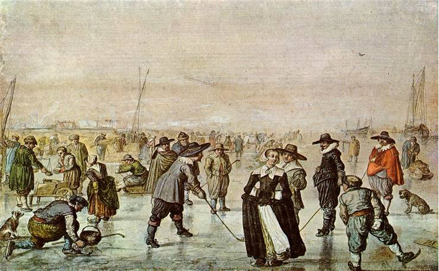
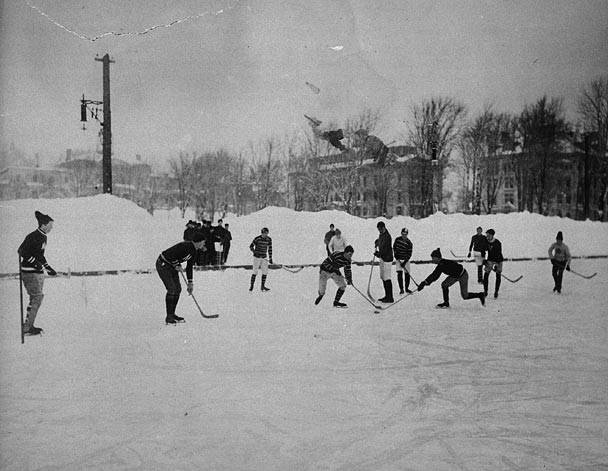
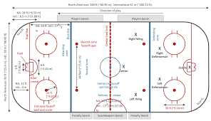

Hockey
Hockey is widely played across the globe and people enjoy watching its matches and tournaments. This tutorial provides an overview of how to play Hockey. Hockey is normally played on grass field or turf field or an indoor stadium. Hockey is predominantly a stick and ball game (stick made of wood). Hockey is also the National Game of India.
The objective of this game is to pass the ball with a bat to the goal of opposite players’ court. Other players will be trying to take the ball away and make their goal. The players in the team will be assigned positions for which the duties will be defined earlier. The task of each player in the team is to get the ball in the opponent’s goal point. All the players should be co-operative in scoring more goals.
The Hockey is either played girls against girls or boys against boys. The team consists of 11 members and each player is assigned with a particular position and task. Like most games, team work is the basic element of winning and the entire team’s contribution is crucial for success.
The 11 players consist of Goalkeepers, Defenders and Strikers. Individual player has got their tasks to work on in the game. The hockey squad will be having a total of 16 players as the game allows rolling substitutions under necessary conditions. The rest 5 players will be a backup most of the time.
Today we are familiar with several of hockey forms, including field hockey, ice hockey, roller hockey and indoor hockey. The most popular one is ice hockey, especially in Canada. Regardless of the forms, hockey is a team sport in which two teams play against each other by controlling a ball or a puck trying to get it into the opponent’s goal. All players use hockey sticks during a game.
It is impossible to claim the exact time of the birth of hockey. We will probably never know for sure, but there are records of people participating in this kind of game about 4000 years ago. Since ball-stick games are as old as our civilization, the earliest origins may be from China, Persia or Egypt. Archeologists discovered that an early form of the ball-and-stick game was played in Greece the 5th century BC. At the time when Europeans sailed across the Atlantic and started settling North America, they discovered that Native Indian people had their games which were precursors of lacrosse. Furthermore, some museums today showcase evidence that hockey was played by Aztecs centuries before Columbus even discovered the New World.
The name “hockey” is thought to be derived from the French hoquet meaning “ shepherd’s stave”, however, there are a couple of suppositions of which none have been evidenced. The second supposition derives from the use of cork bangs, called stoppers, in place of wooden balls to play the game. These objects came from barrels containing hock ale, also known as hocky. Still, though, the origin of “hockey” remains unclear.
J. G. Creighton was the Canadian from Halifax, Nova Scotia who created the first set of rules of ice hockey about 140 years ago. Upon arriving in Montreal, he presented hockey sticks and skates which were patented by Nova Scotia company in 1866. The skates featured rounded blades held onto boots by metal clamps, which had not been seen ever before. The very first game of ice hockey played in Canada was in 1875 at Victoria Skating Rink, in which the new rules were implemented. Just a couple of years later, Mr. Creighton’s rules were revised at McGill University in Montreal. Eventually, it was decided that the game would be held indoors for the first time, due to the belief that ice hockey had to be played on ponds only. Otherwise, people could get badly hurt. Creighton handled the issue by creating a flat and circular piece of wood, that is the first hockey puck. It provided players with better control over a ball, and it decreased the chance of injuring spectators during a game.
Ice hockey is Canada’s national winter sport. The country undoubtedly contributed to this sport more than any other so we could say this their tendency to regard ice hockey as their national sport is entirely justified. The national hockey league of North America, called NHL is the highest level for men’s hockey and thus the most popular. In Russia and the most of Europe, the highest league is called Kontinental Hockey League. The formal governing body of International ice hockey is the International Ice Hockey Federation.
Indoor hockey is very similar to field hockey but only adapted for indoor play. However, the same playing style can be applied outdoors if the surface is flat, hard and asphalted. Each team is created out of six players, and the game has two periods of 20 minutes. One of the rules of the game is that the ball must only be pushed and not hit with the stick. Additionally, the ball may just rise from the surface while attempting to score a goal from the striking circle. The game starts with a lateral pass from the team which loses a toss-up.
The game is played by two teams of 11 players on a rectangular ground. The field is 100 yards (91.4 metres) long and 60 yards (55 metres) wide, and it is marked with a centre line and two 25-yard lines. The goals are 4 yards (3.66 metres) wide and 7 feet (2.13 metres) high. For a goal (which counts for one point) to be scored, the ball must go into the goal and, while within the shooting circle (semicircle), must have been touched by the stick of an attacker. The ball was originally a cricket ball (cork centre, string-wound, and covered with leather), but plastic balls are also approved. It is about 9 inches (23 cm) in circumference. The stick is usually 36 to 38 inches (about 1 metre) long and weighs 12 to 28 ounces (340 to 790 grams). Only the flat left side of the stick may be used to strike the ball.
The usual composition of a team is five forwards, three halfbacks, two fullbacks, and a goalkeeper. A game consists of two halves of 35 minutes each, with an intermission of 5–10 minutes. A time-out is called only in case of injury. The goalkeeper wears thick, yet lightweight pads and, while in the shooting circle, is allowed to kick the ball or stop it with the foot or the body. All other players, however, may stop the ball with the stick only.
Play is started (and restarted after a goal is scored and after half-time) by a pass-back in the centre of the field. A face-off, or bully, is used to restart the game after an injury or equipment time-out, following simultaneous penalties by both teams, or when the ball becomes trapped in a player’s clothing. In a face-off two players, one from each team, face each other with the ball on the ground between them. After alternately tapping the ground and then his opponent’s stick three times, each player tries to strike the ball, thus putting it into play. There are various provisions for putting the ball into play in case it goes off the field.
There are various fouls in field hockey. The off-side rule, which is designed to prevent a player from getting an advantage by staying up the field ahead of the ball and ahead of fewer than two members of the opposing team, was dropped after the 1996 Olympics. Raising the stick above the shoulder while playing the ball is illegal. Stopping the ball with the hand is a foul, as is stopping it with the body or foot. Causing a dangerous play by raising the ball by undercutting it, as well as hooking an opponent’s stick, are also fouls. Finally, there is the obstruction rule: a player is not permitted to obstruct an opponent by putting his stick or any part of his body between the opponent and the ball or by running between the opponent and the ball. Most fouls are penalized by giving the opposition a free hit from the point of infraction. There is one umpire for each half of the field.